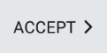

import logging import datetime import os, sys import json logging.basicConfig(filename=r"C:\Users\Administrator\Desktop\perf_rc_suite\Logs\Logs.txt",level=logging.DEBUG) with open(r"C:\Users\Administrator\Desktop\perf_rc_suite\flags.json") as f: data = json.load(f) curBuild = data["builds"]["current"] isDefOTS = data["builds"][str(curBuild)]["defOTS"] def slowType(text, time): for c in text: type(c) wait(time) def OTS(): try: if isDefOTS == 0: if exists(, 60): click() logging.warning(str(datetime.datetime.now()) + " Clicked on Let's Go") else: logging.warning(str(datetime.datetime.now()) + " Couldnt find Let's Go") elif isDefOTS == 1: if exists(, 60): click() logging.warning(str(datetime.datetime.now()) + " Clicked on sign in (def pop up)") else: logging.warning(str(datetime.datetime.now()) + " Couldnt find pop up sign in") if exists(, 60): click() logging.warning(str(datetime.datetime.now()) + " Clicked on sign in (Play Store)") else: logging.warning(str(datetime.datetime.now()) + " Couldnt find Play Store sign in") if exists(, 60): click() logging.warning(str(datetime.datetime.now()) + " Clicked on email field") wait(10) slowType("qatestblue", 1) logging.warning(str(datetime.datetime.now()) + " Typed in email") if exists(, 30): click() logging.warning(str(datetime.datetime.now()) + " Clicked on Next") if exists(, 30): click(Pattern().targetOffset(-305,3)) logging.warning(str(datetime.datetime.now()) + " Clicked on Password field") wait(10) slowType("bluestacks", 1) logging.warning(str(datetime.datetime.now()) + " Typed in password") if exists(, 30): click() logging.warning(str(datetime.datetime.now()) + " Clicked on Next") if exists(, 30): click() logging.warning(str(datetime.datetime.now()) + " Clicked on I agree") if isDefOTS == 0: if exists(, 30): click() logging.warning(str(datetime.datetime.now()) + " Clicked on Start Using Bluestacks") elif isDefOTS == 1: if exists(Pattern().targetOffset(447,234), 60): click(Pattern().targetOffset(448,237)) logging.warning(str(datetime.datetime.now()) + " Clicked on arrow (backup page)") else: logging.warning(str(datetime.datetime.now()) + " Couldnt find down arrow before accepting backup") if exists(, 60): click() logging.warning(str(datetime.datetime.now()) + " Accepted Backup") else: logging.warning(str(datetime.datetime.now()) + " Couldnt find Accept backup") except Exception, e: logging.warning(str(datetime.datetime.now()) + " Couldnt Complete OTS; error - " + str(e)) sys.exit(0) try: OTS() except Exception, e: logging.warning(str(datetime.datetime.now()) + " Couldnt Complete OTS; error - " + str(e))